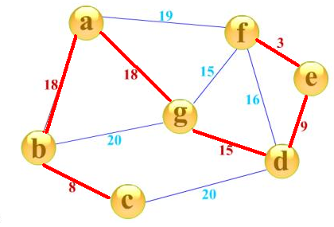
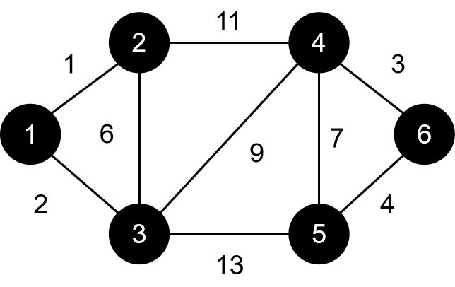
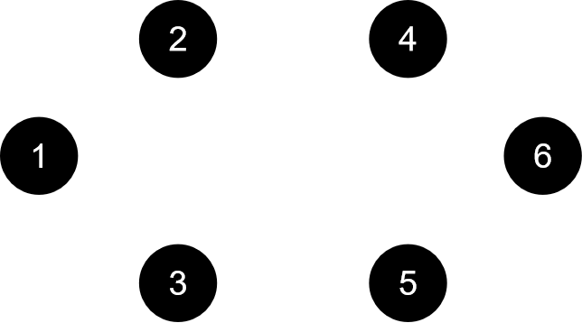
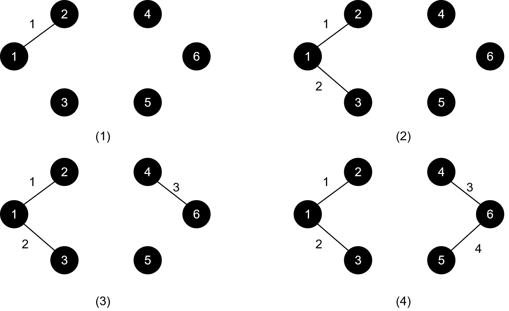
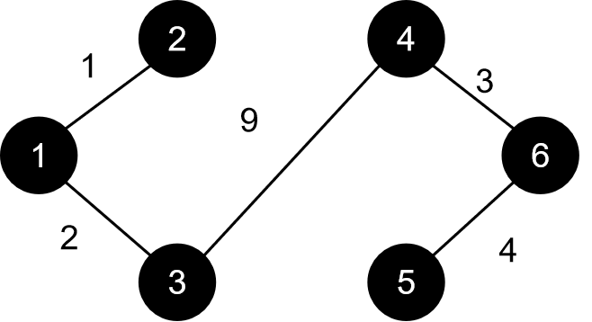
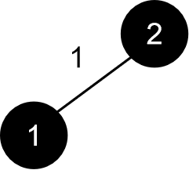
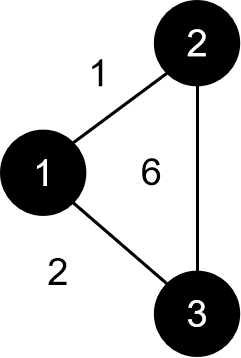

对于一张图，我们有一个定理：n个点用n-1条边连接，形成的图形只可能是树。我们可以这样理解：树的每一个结点都有一个唯一的父亲，也就是至少有n条边，但是根节点要除外，所以就是n-1条边。还有一种理解：树里不存在环，那么既要连接n个点又不能形成环，只能用n-1条边。
那么，对于一张n个点带权图，它的生成树就是用其中的n-1条边来连接这n个点，那么最小生成树就是n-1条边的边权之和最小的一种方案，简单的理解，就是用让这张图只剩下n-1条边，同时这n-1条边的边权总和最小。如下图所示：

红边即为此图的最小生成树，注意我们目前只讨论无向图的最小生成树。
求最小生成树的过程，我们可以理解为建一棵树。要使边权总和最小，我们不难想到可以用贪心的思想：让最小生成树里的每一条边都尽可能小，那么我们有两种思路，分别对应着两种算法：
我们不难想到一种贪心的策略：每一条边的边权都是小的，那这些边连接起来的边权总和一定也是小的。所以，我们不难想到可以先挑选最小的，再挑选次小的、第三小的......直到我们挑了n-1条边。因此，我们可以将这些边按照边权排序，然后开始挑选边。为什么是挑选边呢？不是越小的边越好吗，为什么还要挑？
边权小固然好，但是不要忘记我们有一个大前提：我们要建的是树，它里面不能存在环。也就是说，假如我看到一条边，但是这条边连着的两个点在我建的树里已经连通了，那这条边还需要再加进来吗？很显然不用。这样说可能有点无法理解，我们拿一张图来具体操作一下：

我们的边排序后从小到大依次为(结点 结点 边权)：
①1 2 1②1 3 1③4 6 3④5 6 4⑤2 3 6⑥4 5 7⑦3 4 9⑧2 4 11⑨3 5 13
要建的最小生成树一开始长这样：

我们的操作就是往这棵树里加边，其操作过程如下图所示：

直到目前为止，一切都很顺利。轮到我们的第五条边2 3 6了。我们发现，2和3已经连通，通过1作为中转，这时候我们就不能将2 3 6这条边加入到我们的树中了。同理，下一条⑥号边同样也要跳过，因为4和5已经连通了。接下来，我们加入3 4 9这条边，如图所示：

我们发现我们建的树里每个结点都已经连接了，刚好用了5条边，也就是我们说的n-1条边，算法结束。
算法的实现并不难，最为难的是如何判断两点是否已经连通。我们可以用深搜或广搜来解决，但显然效率极低，因此，我们需要借助一种强大的数据结构：并查集。并查集的最强大的功能就是可以快速地判断两个元素是否在同一集合内（祖先是否相同）,所以我们借助它来判断两点是否连通。
主要代码：
struct edge
{
int u,v,w;
}a[100001];
//边集数组
int boss[10001];//并查集，boss[i]表示i的祖先
int find(int x)
{
if(boss[x]==x)return x;//找到祖先
else
{
boss[x]=find(boss[x]);//路径压缩
return boss[x];
}
}
void Kurscal()
{
int i;
for(i=1;i<=n;i++)boss[i]=i;//初始化
//n个结点，每个结点的祖先默认为它自己，也就是每个结点自己一个集合
stable_sort(a+1,a+1+m,cmp);//m条边，将边按照边权从小到大排序
int cnt=0;//当前最小生成树里边的数量
int len=0;//当前最小生成树边权总和
for(i=1;i<=m;i++)
{);
int x=find(a[i].u),y=find(a[i].v
//x表示a[i].u的祖先，y表示a[i].v的祖先
if(x!=y)
//说明两点不在同一集合内，即这两点不连通
{
boss[x]=y;//标记祖先
cnt++;//边数增加
len+=a[i].w;//边权和增加
}
if(cnt==n-1)break;
//如果已经选了n-1条边，那最小生成树就建好了
}
}除了通过加入边来建树，我们还有没有其它的方法了呢？Kurscal中，我们加入边，是在我们固定了结点的情况下完成的。也就是，我们这时候不在乎这些结点，我们只在乎连接它们的边。那，我们可以不可以在乎一下这些结点呢（雨露均沾）？这时候，我们建树的过程就不是添加边了，而是添加点。那一开始，我们的树就应该长这样(有点尴尬)：
我们一开始应该先找一个根结点，这个根结点可以是任何一个结点，因为最后每一个结点都会两两连通，哪一个作为根就无所谓了。那么，每一次我们都要选一个点加入我们的最小生成树，这个点必须满足什么条件呢？它距离当前树上的与它最近的结点的距离必须是每一个结点距离树上离它们各自最近的结点的距离中最小的,实际上说的就是每一次要找到一个距离“最小生成树”最近的结点。我们仍旧以上面的例子来模拟：
首先，1号点为根，这时候距离这棵树（1号点）最近的是2号点，我们将2号点加入树：

接下来，距离这棵树最近的结点是3号点，我们将3号点加入树：

接下来的操作请读者自己手动模拟，算法只有手动模拟了才能身临其境的感受其思想的真谛（跑题了）
加入点的顺序应该是：1->2->3->4->5->6。注意我们每次选点的时候要选的是树以外的结点，否则一开始就会出现一种非常尴尬的局面：第一轮，找结点，发现根结点到根结点距离为0，选择根结点；第二轮，发现根结点到根结点距离为0，又选根结点......这就陷入了死循环。对于已经在树里的结点，我们是没有必要再去动它了，因为我们的目的就是将所有点插入到树里，那你已经在树里的我还管你干什么？所以我们需要有一个数组来记录结点是否已经在树里。
在选点的过程中，我们需要按照上面说的一大串话那样，比较树外的每一个结点到树上的每一个结点的距离吗？我们在那下面说了：“实际上说的就是每一次要找到一个距离“最小生成树”最近的结点。”我们有没有办法来记录每一个结点到最小生成树的距离呢？当然有！我们可以开一个数组dis，有没有发现，和我们的最短路算法中的Dijkstra算法有异曲同工之妙？不懂得可以看一下最短路算法分析。这两种算法都是不断加入点进行拓展，从而得出整张图的最短路或最小生成树。Dijkstra中dis表示的是结点到源点的距离，这里就是把源点扩大成了一棵树，其思想并没有任何改变，我们仍旧可以把那棵树当作一个点来看待。那么，在加入点后，我们需要用这个点来刷新一下其它非树结点（不在树上的结点）到树的距离，这和Dijkstra的松弛是一模一样的！令人赞叹的是，这两种算法解决的问题不同，它们的过程竟然完全一样！
主要代码：
struct edge
{
int last,to,len;
}a[100001];
int first[10001],len=0;
//邻接表
bool f[10001];//记录是否在树上
int dis[10001];//记录结点到树的距离
void add......//存边
void prim()
{
int i;
for(i=1;i<=n;i++)dis[i]=999999;//初始化
int cnt=0;//树内点的数量
int sum=0;//树内边权总和
dis[1]=0;
f[1]=1;
cnt=1;
//先确定根结点，一般以1作为根结点
while(cnt<n)//直到n个结点均在树上
{
int id,minn=1000001;
//id记录找到的结点的编号，minn是它到树的距离
for(i=1;i<=n;i++)
if(f[i]==0&&dis[i]<minn)
{
id=i;
minn=dis[i];
}
f[id]=1;
cnt++;
//将这个点加入树
sum+=dis[id];
//刷新边权总和
for(i=first[id];i;i=a[i].last)
//刷新结点到树的距离
if(f[a[i].to]==0&&a[i].len<dis[a[i].to])
dis[a[i].to]=a[i].len;
}
}总结一下两种算法：Kurscal算法是将森林里的树逐渐合并，prim算法是在根结点的基础上建起一棵树。
可能有的同学会误解：dis代表结点到树的距离，那这个距离一定只包含一条边吗？在这里，距离只能有一条边。为什么呢？我们每一次是要往树里加一个点的，那如果这个距离经过了不止一条边，那就不满足我们的需求了。这一点要和Dijkstra区别开，Dijkstra是单纯的距离，而prim是只经过一条边的距离。这样的话，即使在存在负边权，求得的dis不是真正意义上的最短距离，也不会影响我们最终的结果。
我们的过程实际上是每一次添加一个点，然后逐渐建起一棵树，我们并不是真的希望这个点到我们的树是最近的，我们只希望这个点加入我们的最小生成树后可以满足我们贪心的要求：局部最优导致整体最优，这个局部指的是我们最小生成树的边权，而并不是真正意义上的距离。这一点一定要好好理解！
同样，prim算法也可以堆优化，那么堆里存的就是结点的编号和它到树的距离，和Dijkstra的堆优化基本一样，希望读者自己尝试去实现。
因为Kurscal涉及大量对边的操作，所以它适用于稀疏图；普通的prim算法适用于稠密图，但堆优化的prim算法更适用于稀疏图，因为其时间复杂度是由边的数量决定的。